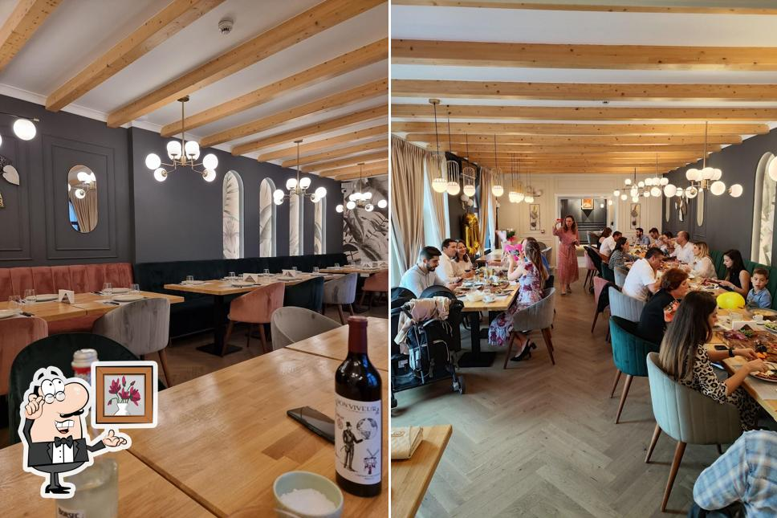
Grill, Soul & more.
La Manu Bistro, focul viu e inima mesei — carne, pește, tot ce merită flacăra. Fără meniu tipărit: bucătarul îți spune ce e proaspăt azi și ce merită gătit. Alături, o pivniță de vinuri alese cu grijă.
Un bistro mic, cu suflet mare, în inima Târgoviștei.
Manu Bistro s-a născut dintr-o idee simplă: focul viu în centrul mesei, iar sufletul la fel de important ca și tehnica. Aici grill-ul nu e doar un mod de a găti — e felul în care înțelegem masa: carne, pește, tot ce se potrivește cu flacăra.
Suntem un local intim, pe Strada Nicolae Filipescu 73, unde fiecare farfurie primește atenție și fiecare oaspete e primit ca acasă. Nu forțăm un meniu fix — gătim ce e proaspăt azi și te ghidăm către ce merită să încerci.
Ne găsești de marți până sâmbătă, la prânz și seara. Vino cu prietenii, cu familia sau pentru o cină de neuitat, alături de un pahar de vin ales cu grijă.
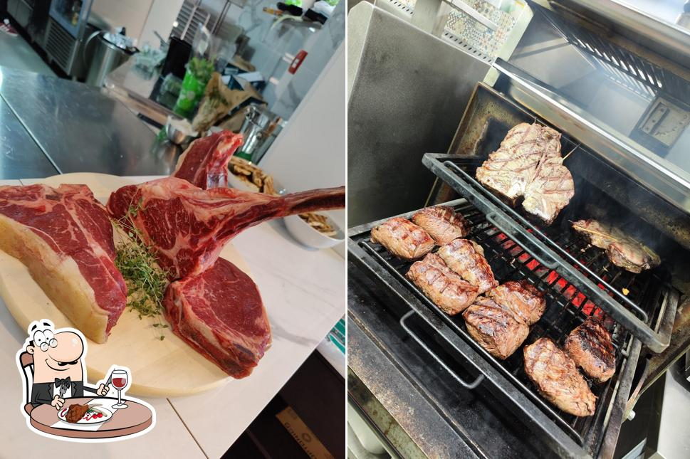
Mai mult decât o cină
Trei lucruri pentru care oaspeții se întorc la noi, masă după masă.
Foc viu, gust adevărat
Grill-ul e inima bucătăriei — carne, pește, orice merită flacăra. Gustul afumat, autentic, pe care doar focul viu îl dă.
Recomandarea bucătarului
Fără meniu tipărit. Îți spunem ce e proaspăt azi și ce merită gătit — o masă care se schimbă odată cu sezonul.
O pivniță pe măsură
Vinuri italiene, spaniole, franceze și românești, alese cu grijă — de la pahar la sticlele de colecție, potrivite perfect cu grill-ul.
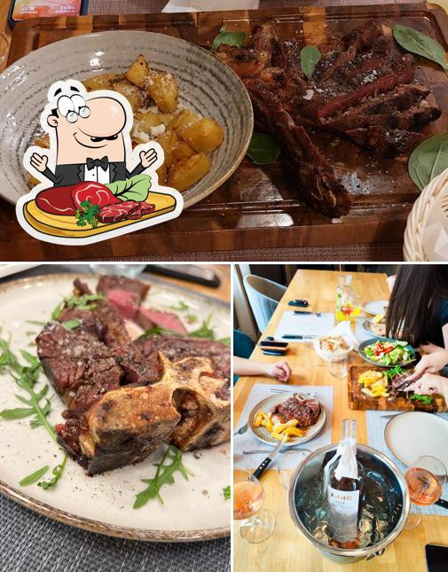
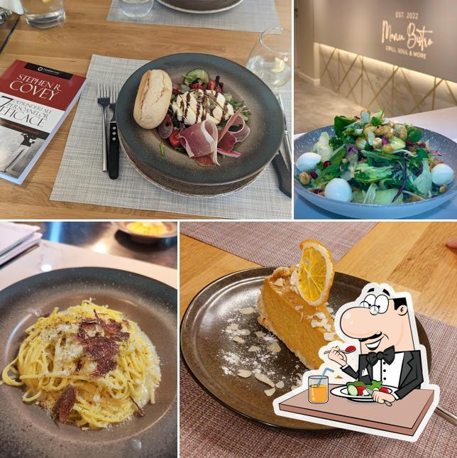
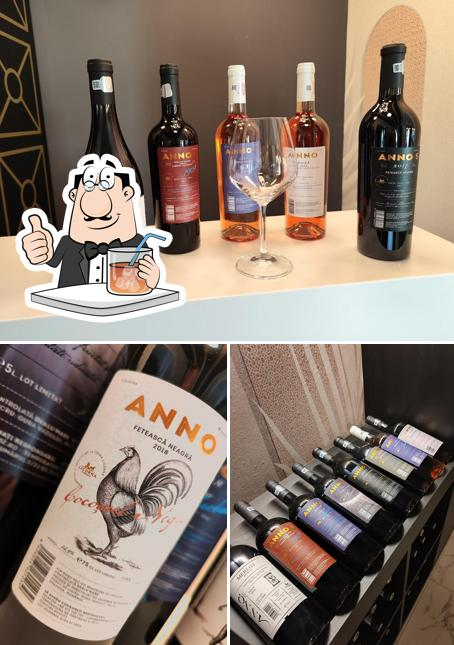
Masa nu se citește — se povestește.
La Manu Bistro nu vei găsi un meniu de mâncare tipărit. În loc de asta, masa e o conversație zilnică: îți spunem ce am primit proaspăt, ce a ieșit bine azi și ce merită gătit pentru tine, chiar acum.
Așa lucrează un bistro adevărat — cu ingrediente de sezon, cu grija de a nu găti două zile la fel și cu încrederea că cea mai bună recomandare vine de la cei care stau lângă foc.
- Grill pe foc viu — carne, pește și legume la flacără
- Recomandare zilnică, în funcție de ce e proaspăt
- Pivniță de vinuri potrivite pentru fiecare fel
- Local intim, ideal pentru cine mici & ocazii speciale
Vinuri alese, pentru fiecare fel
O selecție din carta noastră de vinuri, cu prețuri pe sticlă în lei. Lista completă, la pahar și recomandările sommelierului le găsești la masă — întreabă ospătarul.
Vinuri roșii din Italia
Vinuri roșii din România
Albe, roze & spumante
Prețurile sunt pe sticlă, în lei, și pot suferi modificări. Carta completă de vinuri (inclusiv la pahar și sticlele de colecție) este disponibilă la restaurant. Pentru mâncare, nu avem meniu tipărit — bucătarul îți recomandă preparatele zilei.
O privire în bucătăria noastră
Câteva dintre preparatele, atmosfera și localul care te așteaptă la Manu Bistro.
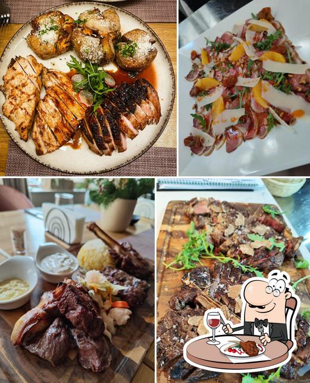
Grill pe foc viu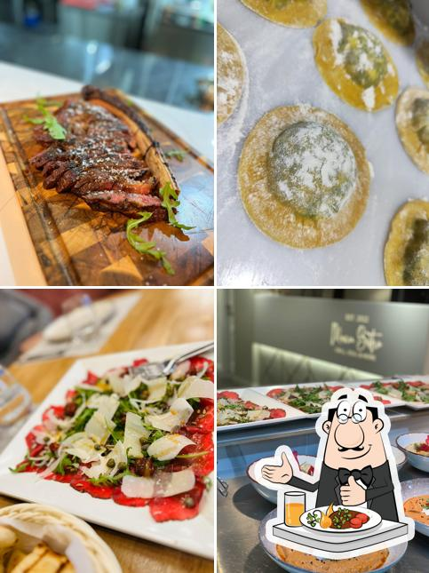
Farfuria zilei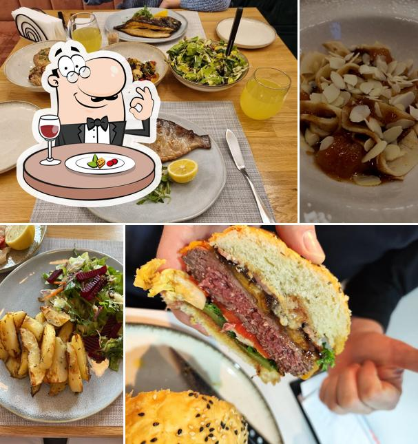
De la masă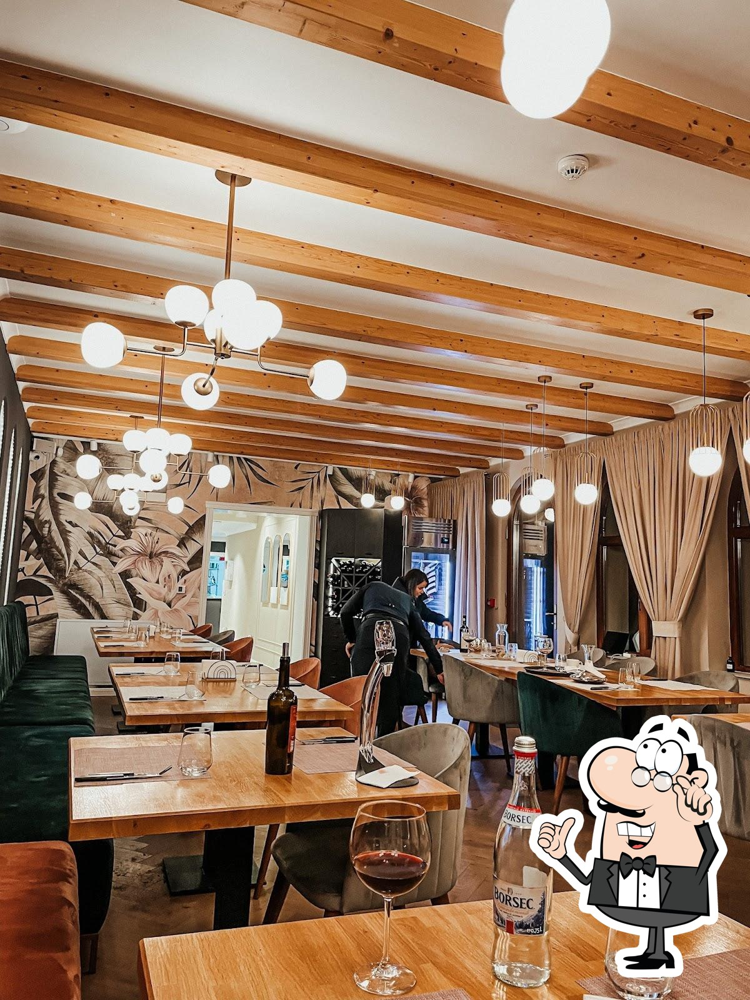
Localul nostru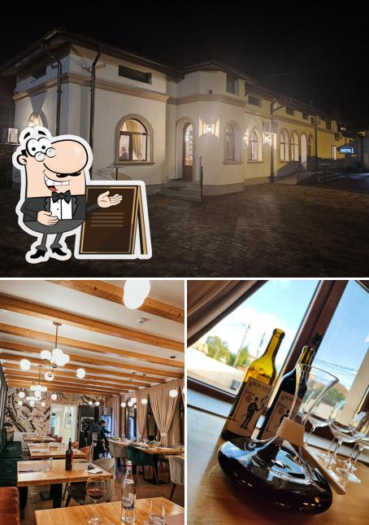
Ne găsești pe Filipescu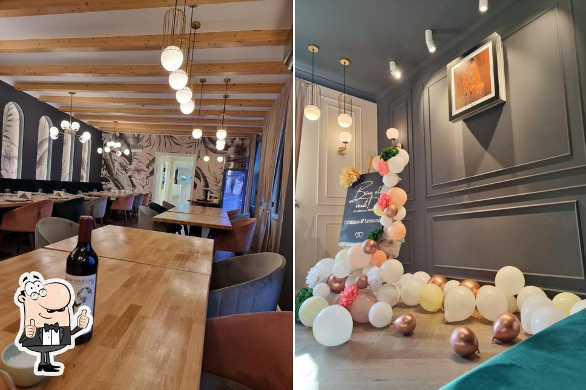
AtmosferaCinci stele, cu suflet
Câteva dintre recenziile lăsate de oaspeții noștri pe Google.
„Ora exactă pe gastronomie în Târgoviște! Mâncare: 5 · Servire: 5 · Atmosferă: 5.”
„The service was amazing and the food was out of this world — the best restaurant we ate during our entire trip.”
„Mâncare: 5 · Servire: 5 · Atmosferă: 5. Recomand cu drag!”